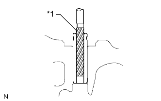

ГОЛОВКА БЛОКА ЦИЛИНДРОВ > ЗАМЕНА |
| 1. ЗАМЕНИТЕ НАПРАВЛЯЮЩУЮ ВТУЛКУ ВПУСКНОГО КЛАПАНА |
Медленно нагрейте головку блока цилиндров до температуры порядка 80-100°C (176-212°F).
С помощью SST и молотка выбейте направляющую втулку клапана.
С помощью индикатора часового типа для отверстий измерьте диаметр отверстия для втулки в головке блока цилиндров.
Выберите новую направляющую втулку.
| Параметр / Устройство | Заданные условия | |
| Диаметр гнезда втулки | 10,985 - 11,006 мм (0,432 - 0,433 дюйма) | 11,035 - 11,056 мм (0,434 - 0,435 дюйма) |
| Используемая втулка | Номинальный | O/S 0,05 |
Медленно нагрейте головку блока цилиндров до температуры порядка 80-100°C (176-212°F).
С помощью SST и молотка вбейте новую направляющую втулку до достижения заданной высоты выступания.
С помощью острой развертки на 6,0 мм разверните направляющую втулку до получения номинального зазора между втулкой и штоком клапана.
| *1 | Острая развертка на 6,0 мм |
| 2. ЗАМЕНИТЕ НАПРАВЛЯЮЩУЮ ВТУЛКУ ВЫПУСКНОГО КЛАПАНА |
Медленно нагрейте головку блока цилиндров до температуры порядка 80-100°C (176-212°F).
С помощью SST и молотка выбейте направляющую втулку клапана.
С помощью индикатора часового типа для отверстий измерьте диаметр отверстия для втулки в головке блока цилиндров.
Выберите новую направляющую втулку.
| Параметр / Устройство | Заданные условия | |
| Диаметр гнезда втулки | 10,985 - 11,006 мм (0,4325 - 0,4333 дюйма) | 11,035 - 11,056 мм (0,4344 - 0,4353 дюйма) |
| Используемая втулка | Номинальный | O/S 0,05 |
Медленно нагрейте головку блока цилиндров до температуры порядка 80-100°C (176-212°F).
С помощью SST и молотка вбейте новую направляющую втулку до достижения заданной высоты выступания.
|  |
С помощью острой развертки на 6,0 мм разверните направляющую втулку до получения номинального зазора между втулкой и штоком клапана.
| *1 | Острая развертка на 6,0 мм |
| 3. ЗАМЕНИТЕ СОЕДИНИТЕЛЬНОЕ КОЛЬЦО |
Снимите соединительное кольцо.
С помощью молотка с пластмассовым покрытием запрессуйте до упора новое соединительное кольцо.